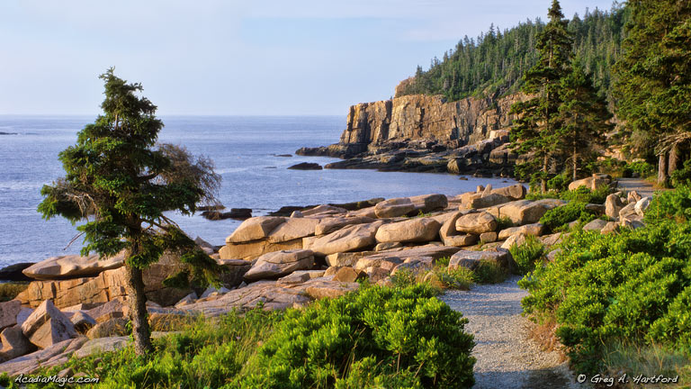

ER - 24/7
Mount Desert Island Hospital Emergency Department
10 Wayman Lane, Bar Harbor, ME 04609Closest hospital for allergy emergencies while staying at Atlantic Oceanside (~5–10 min). Phone: (207) 288-5081
| Time | Activity |
|---|---|
| 3:30 AM | Wake up — grab coffee and layers |
| 4:00 AM | Leave hotel for Cadillac Summit Road |
| 4:30 AM | Arrive summit — find a viewing spot (reservation required) |
| 5:15 AM | Sunrise on Cadillac Mountain |
| 6:30 AM | Descend; breakfast in Bar Harbor or at hotel |
| 8:30 AM | Ocean Path — Sand Beach to Otter Point (~2.2 mi) |
| 11:00 AM | Sand Beach break / snack |
| 1:00 PM | Lunch & rest at hotel |
| 3:00 PM | Optional Gorham Mountain loop (~3.5 mi) — or skip if tired |
| 6:00 PM | Early dinner — recovery night |
Reservation required
A timed vehicle reservation is required for Cadillac Summit Road — separate from your Acadia entrance pass. Without it, you cannot drive to the summit during the reservation period.
Parking
Mostly flat coastal walk with stunning views. Can do out-and-back or one-way with shuttle.
View on AllTrailsRocky ascent to open summit. Skip Cadillac Cliff section with kids — use the standard loop.
View on AllTrails

Preview Cadillac sunrise and the Ocean Path coastal walk.
Medical, groceries, and park stops for Cadillac sunrise, Ocean Path, and Gorham Mountain.
Allergy & emergency
Keep this handy for allergy emergencies. Call 911 for life-threatening allergy reactions.
ER - 24/7
Closest hospital for allergy emergencies while staying at Atlantic Oceanside (~5–10 min). Phone: (207) 288-5081
Urgent care - not 24/7
~25 min from Bar Harbor. Phone: (207) 412-5200
Hospital - backup
Phone: (207) 664-5311
Grocery - island
Main island grocery + pharmacy.
Health food - local
Specialty and natural foods on Cottage Street area.
Stock-up - Ellsworth
Larger supermarket drive off-island.
Supermarket - Ellsworth
Alternate large store near Hannaford Ellsworth.
Big-box - off-island
Wider selection than island stores — short drive toward Ellsworth.
No Costco or Target on Mount Desert Island. Bangor Target is ~1 hour if you need big-box items beyond Ellsworth or Walmart.
Pharmacy
Inside Hannaford — allergy meds and prescriptions.
Pharmacy - downtown
Phone: (207) 288-3318
Pharmacy
Near downtown Hannaford.
Visitor center
Rangers, restrooms, Island Explorer — overflow parking if Sand Beach lot is full.
Beach
Restrooms at the beach house — lot fills early.
Summit
Restrooms at the summit area after sunrise.
Coastal stop
Restrooms nearby on the Park Loop Road.
Trailhead - parking
Small lot — arrive early or use Island Explorer from Hulls Cove.
If Sand Beach parking is full, park at Hulls Cove and ride the Island Explorer Sand Beach route.
Confirm before you go